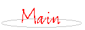

last updated 1999.3.1
フィリングタイムのホームページへようこそ。
このページは板倉文さん率いる"Killing Time"のファンクラブのページです。
NewsにBAnaNA-UGさんのDJ情報を追加。(1999.3.1)
NewsにKILLING TIMEと小川美潮とウヨンタナさんのライヴ情報を追加。LinkにウヨンタナさんのHPを追加。(1999.1.31)
Newsにライヴの情報を追加。(1998.12.21)
なんと復活ライヴが決定しました、詳しくはこちらで。
フィリングタイムは会員を募集しています。申し込みの宛先はこちらです。
同時に色々と手伝って頂ける方も募集しています。よろしくお願いします。
このページはNetscape Navigator 4.04とInternet Explorer 4.0で動作確認をしています、一応。



this page written by kei sugawara
keis@vc-net.ne.jp
このHPに関するご意見、お問い合わせ、苦情等はこちらへ。